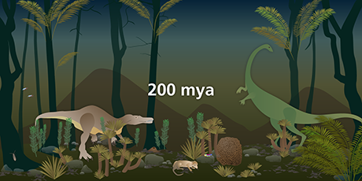
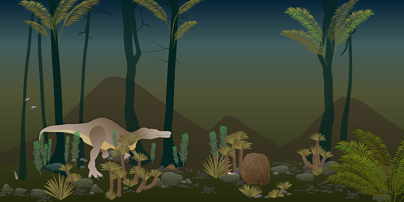

Please wait...
Fetching data from server

Please wait for all team members to arrive
Once all team members have scanned in at the location you will receive additional information to proceed.
Log in successful
Welcome to the simulation lab. As part of your training to join a special team of rainforest ecologists to save the rain forest, we've prepared a number of exercises to test your knowledge, problem solving-skills and ability to work in a team-based environment.
Your first task is in the domain of evolution. You will examine the Borneo area between 200 million years ago (mya) and present day. You will work in teams, with each member specializing in different species of the rainforest.
You will be collectively creating a cladogram and determine how the species of Borneo came to be in their current form.
Welcome to the simulation lab
For this exercise, you will be working with people from various specialties as a team. Your team should have at least one expert from each of the specialty groups.
Team assignment:
Team members:
Instructions: There are four different versions of Southeast Asia set at different times in this room: .
If you have been preassigned as a guide for any of these four time periods, please select the "Guide" button. Otherwise, please select the "Participant" button.
Instructions: Once the activity begins, a "Next" button will appear on this screen
When you click "Next" you will be assigned an organism. Your task is to determine whether your organism is present at the time periods and if not, whether its ancestral forms are present
When you are done, another organism will be assigned to you until all of the organisms are complete.
Instructions: Please select the time period for which you have been assigned as a guide
Instructions: You've been selected as a guide for:
Please go to the station and help your peers to determine whether their organism is present at your time period. If not, help them find the organism's ancestral form.
Once the activity begins, a "Next" button will appear. This gives you access to a specialty field guide that has been created to assist you with this task.
Time:
Organism:
Is the organism present here?
Time:
Organism:
Present: No
Instructions: Which of the following is most likely the organism’s ancestor? Click on each organism to read more about it. Select your choice from the drop down menu.
Time:
Organism:
Description:
Time:
Instructions: Choose an animal or plant
Your portion of the cladogram task is complete
Instructions: You just helped complete a survey of the organisms at . When everyone is done, you will review this information in your teams.
Find your team members and meet up at:
Team members:
If you are the first in your team to finish, take this time to review the cladogram.
Instructions: As a team, you will compare the environment between:
There are three questions to complete. We have also provided you with additional information about these time periods.
Please assign specific roles amongst yourselves for this task. For example, each person in the team could serve as a scribe for one of the questions and another could look up information.
Instructions: As a team, you will compare the environment between:
Discuss the following with your group members and record your answer below. Please note that only one person per group should submit an answer, otherwise your answer will be lost
Instructions: As a team, you will compare the environment between:
Your assignment at this location is to look up information about these time periods. Select a time period below to begin.

Time:
Instructions: Click an outlined component in the image to read more about it.

All questions submitted!
Instructions: Go up to the cladogram and take a look at the organisms in your specialty (e.g., birds, primates, other mammals, plants and insects). An organism will be assigned to you and your task is to follow its evolution from 200 mya to present day.
Your teacher will take you "back in time" so that you can collect evidence related to your organism's evolution, e.g. by writing a note, taking a photo, interviewing colleagues.
Organism:
Introduction: While you're waiting for your teacher to take you "back in time" go to the cladogram and survey important time periods for your organism.
Think about:
1. When was the most interesting point in time for your species and
2. What adaptation and evolutionary forces do you think are at play at the different time periods? Consider interactions with other organisms.
Organism: some organism
Instructions: For your organism, what evolutionary forces do you think are at play between
Steps:
- Review cladogram

- Review rainforest
- Review additional information
Integrate your thinking and briefly explain